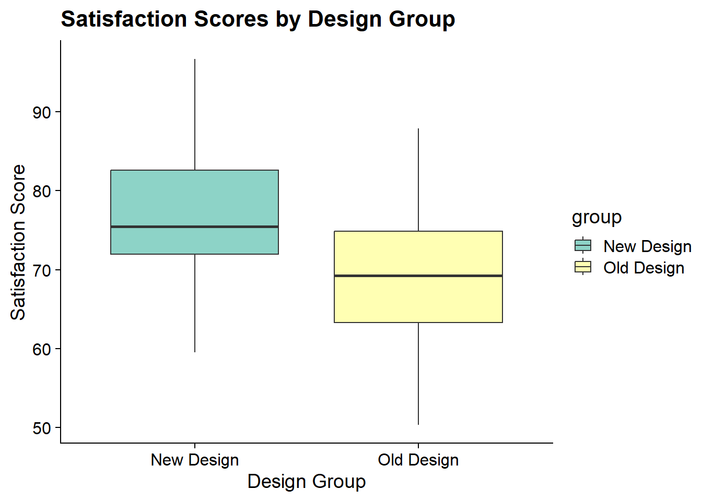

The t-test, proposed by William Sealy Gosset under the pseudonym “Student” in 1908, is used to determine if there is a significant difference between the means of two groups. It is commonly used when the sample sizes are small and the population variance is unknown.
Statistic
Description
Proposed by
William Sealy Gosset (1908)
Purpose
Compare means of two groups
When to use
Small sample sizes, unknown population variance
Example question
Is there a significant difference in user satisfaction between two versions of a software?
Analytical goal
Determine if the mean satisfaction scores differ significantly between the two versions
3.2 Research Question and Hypothesis
In today’s fast-paced digital world, user experience (UX) is a critical factor that can make or break a product. Imagine a tech company, “InnovateTech,” which has recently launched a new interface design for its flagship software. The company is keen to understand whether this new design truly enhances user satisfaction compared to the old design.
InnovateTech has invested significant resources into redesigning its software interface, aiming to make it more intuitive, visually appealing, and user-friendly. The old design, while functional, received mixed reviews from users, with common complaints about its complexity and outdated look. The new design promises a sleek, modern interface with improved navigation and enhanced features.
To validate the effectiveness of the new design, InnovateTech conducts a study involving a diverse group of users. Participants are randomly assigned to use either the old or the new interface for a week. At the end of the week, they complete a detailed satisfaction survey. The company hopes that the results will provide clear insights into whether the new design meets user expectations and enhances their overall experience.
Research Question: Does the new interface design improve user satisfaction compared to the old design?
Hypothesis: Users will report higher satisfaction scores with the new interface design compared to the old design.
3.3 R packages
# Load the necessary packages library(tidyverse) # used for data manipulation and visualization
── Attaching core tidyverse packages ──────────────────────── tidyverse 2.0.0 ──
✔ dplyr 1.1.4 ✔ readr 2.1.5
✔ forcats 1.0.0 ✔ stringr 1.5.1
✔ ggplot2 3.5.0 ✔ tibble 3.2.1
✔ lubridate 1.9.3 ✔ tidyr 1.3.1
✔ purrr 1.0.2
── Conflicts ────────────────────────────────────────── tidyverse_conflicts() ──
✖ dplyr::filter() masks stats::filter()
✖ dplyr::lag() masks stats::lag()
ℹ Use the conflicted package (<http://conflicted.r-lib.org/>) to force all conflicts to become errors
library(ggrain) # used for raincloud plots
Registered S3 methods overwritten by 'ggpp':
method from
heightDetails.titleGrob ggplot2
widthDetails.titleGrob ggplot2
library(cowplot) # for cowplot theme in ggplot
Attaching package: 'cowplot'
The following object is masked from 'package:lubridate':
stamp
library(Statamarkdown) # to run Stata commands in an R environment
Stata found at C:/Program Files/Stata18/StataBE-64.exe
The 'stata' engine is ready to use.
# Statamarkdown configurationstataexe <-"C:/Program Files/Stata18/StataBE-64.exe"# Add your own path to the Stata executable here if you want to try this outknitr::opts_chunk$set(engine.path=list(stata=stataexe))# to install any missing packages go to the Terminal and run the command: install.packages("PACKAGE_NAME")
3.4 Simulated Dataset
3.4.1 In R
set.seed(123)n <-30old_design <-rnorm(n, mean =70, sd =10)new_design <-rnorm(n, mean =75, sd =10)data <-data.frame(group =rep(c("Old Design", "New Design"), each = n),satisfaction =c(old_design, new_design))write.csv(data, "satisfaction_data.csv", row.names =FALSE)
Number of observations (_N) was 0, now 30.
file new_design.dta saved
use old_design.dtaappendusing new_design.dtasave satisfaction_data.dta, replace
file satisfaction_data.dta saved
3.5 Statistical Analysis
3.5.1 Inspecting Data Descriptives and Plotting
3.5.1.1 In Stata
use satisfaction_data.dtasummarize satisfactiongraph box satisfaction, over(group)
Variable | Obs Mean Std. dev. Min Max
-------------+---------------------------------------------------------
satisfaction | 60 72.69432 11.03765 50.47923 99.36316
3.5.1.2 In R
data <-read.csv("satisfaction_data.csv")summary(data$satisfaction)
Min. 1st Qu. Median Mean 3rd Qu. Max.
50.33 65.48 73.26 73.16 80.62 96.69
p <-ggplot(data, aes(x = group, y = satisfaction)) +geom_boxplot() +theme_cowplot() +labs(title ="Satisfaction Scores by Group", x ="Group", y ="Satisfaction Score")p

3.5.2 T-test
3.5.2.1 In Stata
use satisfaction_data.dtattest satisfaction, by(group)
Welch Two Sample t-test
data: satisfaction by group
t = 3.0841, df = 56.559, p-value = 0.003156
alternative hypothesis: true difference in means between group New Design and group Old Design is not equal to 0
95 percent confidence interval:
2.543416 11.965426
sample estimates:
mean in group New Design mean in group Old Design
76.78338 69.52896
3.6 Explanation of Relevant Terms
Term
Definition
Common Misconception
P-value
The probability of obtaining test results at least as extreme as the results actually observed, under the assumption that the null hypothesis is true.
The p-value is the probability that the null hypothesis is true.
Confidence Interval
A range of values, derived from the sample data, that is believed to contain the true parameter value with a certain probability. If repeated samples were taken, a specified proportion of these intervals would contain the true parameter value.
A 95% confidence interval means there is a 95% probability that the true parameter lies within the interval.
T-statistic
A ratio of the departure of the estimated value of a parameter from its hypothesized value to its standard error. The degrees of freedom (df) are the number of independent values that can vary in an analysis without breaking any constraints.
The t-statistic directly tells us the probability of the null hypothesis being true.
3.7 Interpretation Questions
What does a significant p-value indicate in the context of this t-test?
How would you interpret the confidence interval in this analysis?
Solutions:
Significant p-value: A significant p-value indicates that the observed data is unlikely under the null hypothesis. This suggests that there is evidence against the null hypothesis, implying a statistically significant difference between the satisfaction scores of the two groups. However, it does not measure the probability that the null hypothesis is true or false.
Confidence interval: The confidence interval provides a range of values that, based on the sample data, is likely to contain the true mean difference between the groups. If we were to repeat the experiment many times, we would expect a specified proportion (e.g., 95%) of these intervals to contain the true mean difference. It does not mean that there is a 95% probability that the true mean difference lies within this specific interval.
3.8 Comparison Tables
3.8.1 Assumptions and Statistical Analysis Commands
Step
R Command
Stata Command
Descriptive Statistics
summary(data$satisfaction)
summarize satisfaction
Box Plot
ggplot(data, aes(x = group, y = satisfaction)) + geom_boxplot()